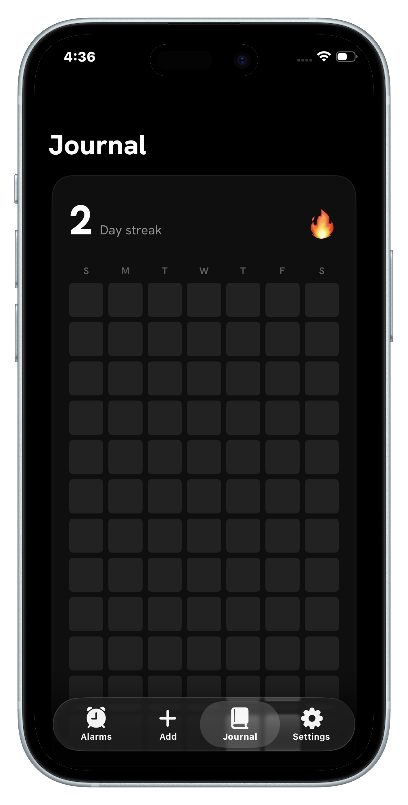

Why streaks work on your brain
Behavioral economists call it loss aversion: losing something feels roughly twice as bad as gaining the same thing feels good. A streak converts your consistency into a possession — 27 days, visible, yours. Skipping tonight no longer means "I didn't journal." It means "I destroyed 27 days of proof." Your brain will fight to protect that.
It's the same mechanism behind Jerry Seinfeld's famous productivity advice — write every day, mark an X on the calendar, and then your only job is: don't break the chain.
Starting a streak that survives
- Shrink the unit until failure is absurd. The daily requirement should be one line — something you can do exhausted, sick, or on vacation. Streaks die when the daily ask is a "twenty-minute session." They survive when it's a sentence.
- Fix the trigger. Decide when the entry happens and let something external enforce it. "I'll do it at some point today" is how day 12 quietly never happens. An alarm at 9:30 PM is how it does.
- Make the chain visible. A number is good; a heatmap is better. Seeing a wall of filled squares — and the hole a skipped day would leave — recruits your eyes into the fight.
Don't count on wanting to journal. Count on not wanting to lose the streak.
Protecting the streak on bad days
- Lower the bar, not the flag. On terrible days, the entry can be "Today was terrible." That line counts. It might be the most valuable one you write all month.
- Never miss twice. If the streak breaks, the goal instantly becomes a one-day streak tomorrow. One miss is an accident; two is the start of the old pattern.
- Keep the streak in your face. The days you most want to skip are the days you avoid opening the app. Put the streak on your home screen so it finds you anyway.
How streaks work in Fix Your Life
Fix Your Life is built around exactly this loop:
- The alarm is your trigger. It rings at your chosen time until you face the question — the entry can't slip your mind.
- One line keeps the streak alive. Answer the question and today's square fills in. That's the whole daily cost.
- The Journal heatmap shows every day you showed up — your chain, at a glance.
- Home screen widgets keep the streak count 🔥 in sight all day, so protecting it becomes a reflex. Here's how to set the widget up.
